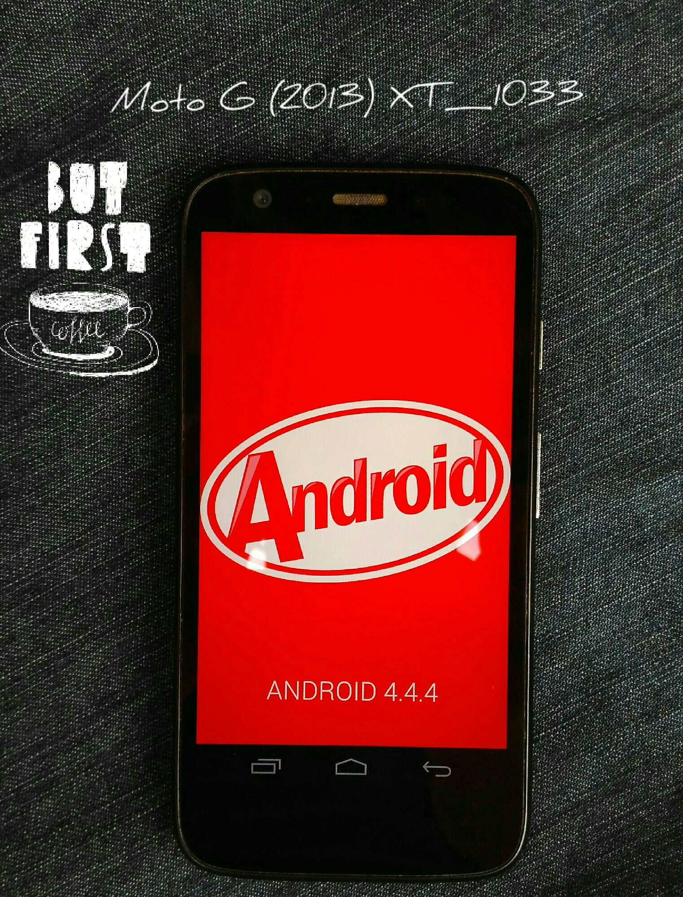

Seção Root veja como enraizar seu aparelho sem prescisar de um minucioso blá blá blá.
Olha, se não quiser rolar o mouse até o fundo, basta apenas pressionar a tecla F3 do seu teclado e inserir o modelo do dispositivo para agilizar.
Veja como Realizar root no MOTO G XT1556

Motorola MOTO G XT1556
Como Realizar root no Samsung Galaxy J3 J320?

Samsung Galaxy J3 SM-J320
Realize root no Samsung Galaxy S4 MINE I9192

Galaxy S4 MINE I9192
Realizar root no MOTO G 4G LTE XT1078?

Motorola MOTO G 4G LTE XT1078
Como Realizar root no Motorola Moto G XT1033?
Motorola Moto G XT1033
Veja como Realizar root no Moto G XT1068

Motorola Moto G XT1068
Veja como Realizar root no Moto G XT1069

Motorola Moto G XT1069
Veja como Realizar root no Moto E XT1022

Motorola Moto E XT1022
Veja como Realizar root no Moto E XT1025 TV
Motorola Moto E XT1025 TV
Como Realizar root no Moto e 2?

Motorola Moto e 2 XT1514
Veja como Realizar root no Moto G XT1544

Motorola Moto G XT1544
Como Realizar root no Samsung Galaxy ON7 G600FY?

Galaxy ON7 G600FY